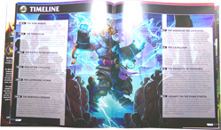

The Lore We Follow
Warcraft has been the setting for our adventures for many years. Its history, cultures, magic, and many different peoples give us a wonderful foundation for stories of our own. We aim to remain as faithful to that foundation as reasonably possible, while recognizing that Azeroth is much larger than the places and events shown directly to players in their games, or even written in their books.
When a question arises, we begin with the established lore. We look through in-game quests, books, earlier references, and examples from the world itself. Where the information is incomplete, we use what we have learned to develop interpretations that feel like a natural part of Warcraft. This has been especially important in stories involving dragons, the Infinite Dragonflight, and the timeways.
Our stories therefore contain a mixture of established lore, conclusions drawn from existing material, and worldbuilding developed by our group. We try to understand the difference between them and make our choices consistent with the setting.
Our Lore Sources & Interpretations
A great deal of Warcraft's worldbuilding exists outside the games, and important details are not always collected in a single place. Our group has spent years gathering and comparing material from sources such as:
- The Warcraft games: the strategy games and World of Warcraft, including quests, dialogue, cinematics, in-world books, and environmental details.
- Reference books: the World of Warcraft Chronicle volumes, World of Warcraft: Ultimate Visual Guide, and World of Warcraft: The Dragonflight Codex, among others.
- Novels, comics, manga, and short stories: additional perspectives on characters, societies, and events that may receive only brief attention in-game.
- The older Warcraft tabletop RPG books: an extensive source of early descriptions of the setting, its cultures, creatures, and everyday life.
- Warcraft Wiki: a useful reference for locating specific details, comparing sources, and following citations back to their origins.
We consider the games and official publications our primary references. The older tabletop RPG books require more care: Blizzard does not consider their contents canon by default, although elements from them have later entered official lore. We still consult those books where newer material is silent, while treating their details as older reference material rather than automatic canon. See the Warcraft RPG and Blizzard's Ask CDev discussion for that distinction.
Research sometimes means putting together clues that were never intended to form a complete explanation. Our older dragon notes, for instance, compared accounts of Wrathion's hatching and other appearances of dragon eggs to explore how incubation might work. The result was a working interpretation, not a definitive incubation period established by Warcraft. We take a similar approach when considering a species' development, customs, or history.
When the Lore Changes
Warcraft has evolved over decades, and newer stories sometimes expand, revise, or appear to conflict with earlier information. When that happens, we look at the sources again and decide what best fits our continuing stories. We may revise a previous assumption, retain an older interpretation with clear context, or leave a question open.
One example concerns dragon eggs. In the Legion quest The Last of the Last, Senegos says dragons can no longer bear eggs following Deathwing's defeat. Yet Dragonflight later features clutches of eggs, including black dragon eggs escorted to the Ruby Life Pools, before the Aspects' eventual re-empowerment. The presence of those eggs does not, by itself, establish when they were laid, and the material leaves questions unanswered. In our own continuity, we chose not to retain universal dragon infertility as an ongoing rule.
For us, following the lore also means being willing to revisit our understanding of it. Our interpretations are there to support the world and its stories, not to prevent them from growing. But it also shows that there are time's even we may dislike or disagree with where the writers are going.
Timeline & Date References

Warcraft has an extensive history reaching far beyond the events of the games. That history helps us place our adventures in a larger world, whether our characters witness an established event, remember something from the past, or experience a different path through the timeways.
We generally use the same system used by Warcraft for its dates. BDP (Before the Dark Portal) and ADP (After the Dark Portal) when referring to years. Year 0 (zero) marks the original opening of the Dark Portal and the beginning of the First War. These terms give us a consistent point of reference for events that may be separated by years or millennia. The Warcraft Wiki timeline brings together the published dates and notes where sources differ. This is how we reference dates; the chronology of events and our group's adventures belong in Our World & Timeways.
Culture, Traditions & Social Expectations
One of the pleasures of exploring Azeroth is encountering peoples whose customs differ from one another. Their history and circumstances shape ideas about family, faith, honor, community, leadership, and duty. Those differences are an important part of how we write our characters.
We have a saying in our group: “Leave real-life at the door.” By this, we mean entering the fictional world with an interest in understanding its people on their own terms despite what our own real life world views may be. A Paladin devoted to the Holy Light may approach a choice differently from a Druid guided by nature or a Death Knight shaped by their experiences. Nor does every member of a race, order, or faction necessarily agree with its traditions.
Example: Dragons: Consorts, Mates & Kinship

Warcraft depicts several Dragon Aspects with multiple consorts, including a Prime Consort. We use that established precedent as a starting point for our portrayal of draconic relationships. These are companions, partners, and lovers whose relationships may also carry duties, loyalties, and responsibilities within draconic society. In our stories, some dragons have several mutually acknowledged mates, with loyalties, commitments, and responsibilities understood by those involved.
As we also stated, leaving real life at the door, can accept Dragons may have several mutually acknowledged mates, and a relationship involving more than two partners is not automatically an act of infidelity or betrayal. Expectations depend on the understandings and commitments of the characters involved.
Likewise, our interpretation also recognizes that dragons may use terms such as brother or sister as expressions of shared kind or community, not necessarily of blood relation. Such language by itself does not make an unrelated pair biological siblings. The meaning comes from the characters and their relationship, not from the term alone.
Example: Orcs, Trolls & Different Customs
The importance of Orcish traditions have often placed enormous importance on strength, contribution, and the survival of the clan. Within some orc societies, weakness has been viewed as a serious liability, with exile among its harshest consequences. (The weakness of one contaminates the strength of all), Other clans and leaders; notably the Frostwolves and Thrall; have shown different measures of compassion. Orc culture is not a single unchanging rule, but those tensions are part of its history.
Among Troll societies, spiritual practices and voodoo traditions differ between tribes. Some tribes historically practiced cannibalism, while the Darkspear officially abandoned it upon joining the Horde. These variations help us understand how characters from different communities might see one another and their own heritage. What one society treats as customary may be rejected by another, including others of the same species.
We include the beliefs and customs of Azeroth's peoples because they inform their choices and create meaningful relationships and conflicts. Understanding a custom in its fictional context does not mean every character accepts it. These differences create relationships, conflicts, and choices that would disappear if every race were reduced to the same set of modern human expectations. We want the peoples of our world to feel different because those differences help make the world alive.
Including such customs in a fictional story is not the same as endorsing them in real-life. Nor must every character approve of their own society's traditions. Disagreement, reform, loyalty, and rebellion can be just as important to a story as the customs themselves.
Lifespans & Rate of Aging
Azeroth is home to peoples whose lifespans and rates of development can differ greatly from one another. Some reach important milestones much earlier than humans; others live for centuries or millennia. A character's numerical age alone does not tell us whether they are a child, an adolescent, an adult, or an elder within their own species.
When writing a character, we consider what their species' lore tells us about physical growth, lifespan, education, cultural expectations, and the transition to adulthood. We also distinguish these from personal experience, emotional development, and temperament. A young adult may be intelligent and capable without possessing the judgment of someone much older; likewise, a shy, playful, or inexperienced adult is not necessarily immature for their species.
Where Warcraft gives no precise ages or developmental rules, we compare the examples it does provide and make a reasonable interpretation for our continuity. We do not simply convert every character's age into an equivalent number of human years.
Orcs: Coming of Age
Orcish development offers a useful example right in game. Warcraft's accounts describe Orcs as beginning weapons training around age six, when they may already be nearly the size of an adult human. Traditionally, Orcs could undertake the *om'riggor*, a rite marking the passage into adulthood, at around twelve years old. That is a milestone within Orcish society, rather than a claim that an Orc of twelve must think and behave like a twelve-year-old human.
We see those traditions explored again through Durak, Thrall and Aggra's son. During the Dragonflight Orc heritage storyline, Durak looks forward to a coming-of-age rite as the community introduces the broader *om'gora*. In Blizzard's later short story *Trials*, he has reached the age to attempt it, while Thrall wrestles with whether his son is ready for the dangers involved. Durak is approximately twelve years old by this point, based on the story's timeline, ready to take on the passage into adulthood. The distinction between being of age, demonstrating readiness, and earning the trust of one's family is part of what makes the example interesting.
Dragons: Growth and Experience
Dragons offer another, rather different example of how a species does not age the same way we do in real life.
By the events of Ny'alotha during Battle for Azeroth, Wrathion numerical age is approximately five to six years old, yet has already developed into a drake; a stage that Warcraft describes as encompassing adolescence and young adulthood. By Dragonflight, he would be around 12. His intelligence, independence, and ambition fit a developing young adult; his occasional arrogance and poor decisions also remind us that rapid growth does not grant centuries of experience. His chosen mortal appearance, or visage, is magical and also does not necessarily indicate his biological age. However, despite his numerical age, for his species he still falls under a young adult. With other sources stating dragons don't reach their full dragon stage until over 100 years in age.
Nether Dragons provide a contrasting example: They are descend from Black Dragon eggs transformed by the energies of the Twisting Nether after the planet Draenor's destruction into Outland (8 ADP). Nether Dragon's established lore describes rapid development and unstable energies that can burn out, giving them much shorter lives than other dragons.
We refrence Warcraft III; that is set about 12 years after Draenor's destruction (in 20 ADP) into Outland; that depicted adult Nether Dragons, new Whelps, and Eggs. As of The Burning Crusade era, (26 ADP) roughly 18 years have passed sense those first Black Dragon eggs got warped into the first Nether Dragons, with around 4-5 generations being shown existing all across Outland, from the original Nether Dragons, to their adult children, new drakes and more whelps and eggs. Including inside the main Netherwing quest-line. All mark an important part of how we interpret their rapid maturation.
Our group's estimate that they may live only a few decades based on what we have seen in the game and the novels. For one of our Nether dragon characters, that expectation is central to his fear of running out of time and his desire to find a way to live longer.
How This Shapes Our Characters
We use these differences to understand how characters grow, what responsibilities their communities may place upon them, and how they view the years ahead. A cultural coming-of-age ceremony, a physical growth stage, and a character's personal wisdom are related, but they need not occur at the same moment.
Our aim is to portray each species according to the world it belongs to, while allowing individuals within that species to develop their own personalities and experiences. Where the lore leaves questions unanswered, we do try and find our own interpretation.
We also stress all this, as we have had an incident in the past involving some individuals assumptions about our characters developmental stage's, using a number of factors they presumed, including numeral ages striped of their species context to try and justify their own views.
Languages Between Races
World of Warcraft has historically placed practical limits on which languages player characters can use, especially across the Alliance and Horde. The fictional world, however, includes diplomats, merchants, scholars, soldiers, travelers, and neighbors whose lives bring them into contact with other peoples.
We therefore consider a character's background when deciding what languages they might know. A long-serving diplomat might understand several tongues; someone with little opportunity to travel might know only their own. Fluency is not guaranteed simply because a character has heard or studied another language.
The Draenei provide an example. When they first arrived on Azeroth, some might plausibly have understood Orcish through their earlier history on Draenor without yet knowing Common. Others might have learned Common quickly after their arrival, while some would still be developing their fluency years later. This is a reasonable interpretation of their circumstances, not a universal statement about every Draenei.
Our aim is to make communication reflect the individual character's life and experience, rather than treating gameplay language limitations as the full extent of what is possible in lore.
Gameplay Mechanics vs. World Lore
Azeroth is both an imagined world and the setting for a game. Some game systems exist to support balance, accessibility, or the practical limits of what can be represented on screen. These mechanics are useful to players, but they do not always describe every possibility within the fiction.
A character's class abilities need not be limited to the spells shown on an action bar. Character models cannot depict every variation in appearance or anatomy. Faction and language restrictions may not represent the knowledge and relationships of every individual living in the world.
We do not take this to mean that anything can happen without explanation. We still look for precedents, consider a character's training and circumstances, and respect the consequences that give magic and other abilities meaning.
The game provides the foundation. Our goal is to explore the larger world it represents while remaining thoughtful about the lore that makes that world recognizable.